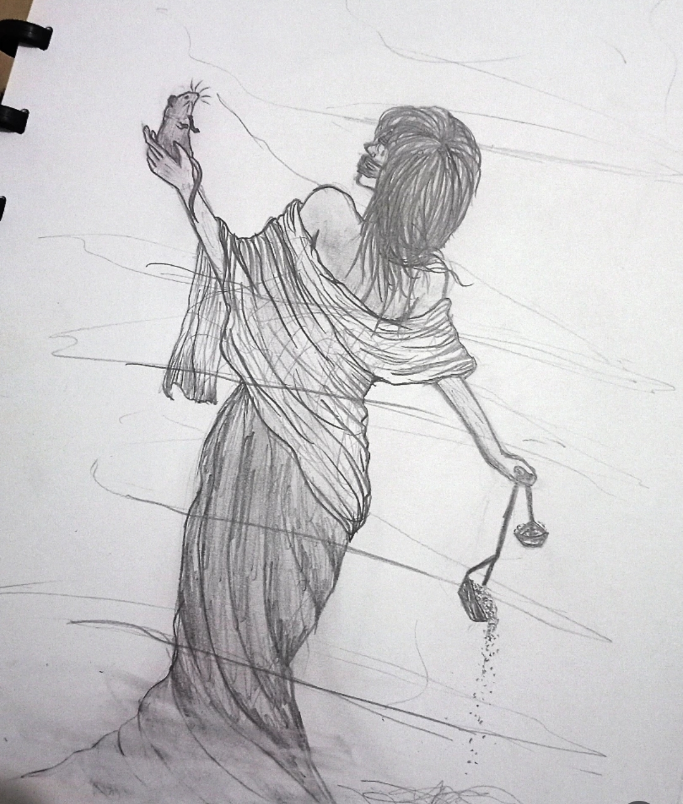
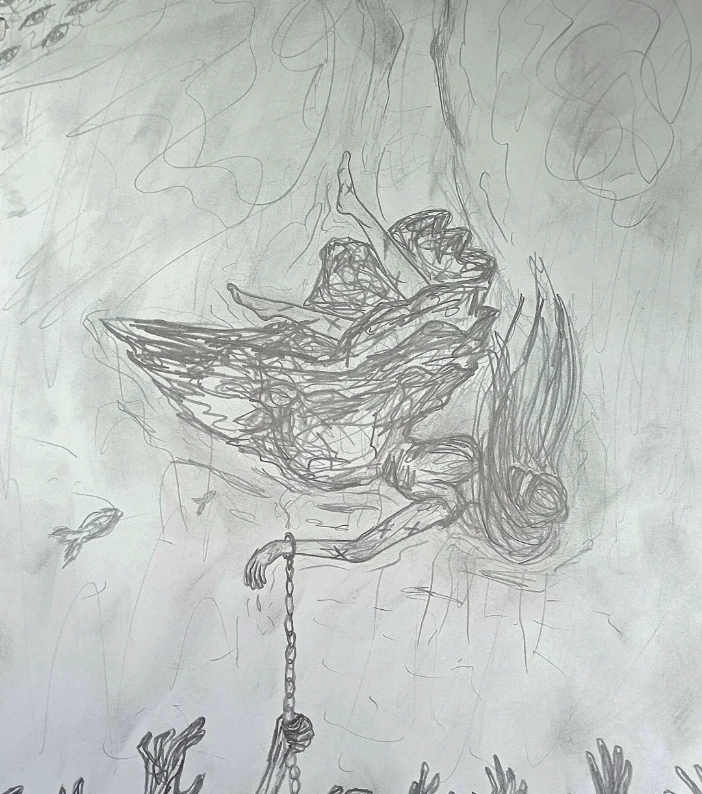
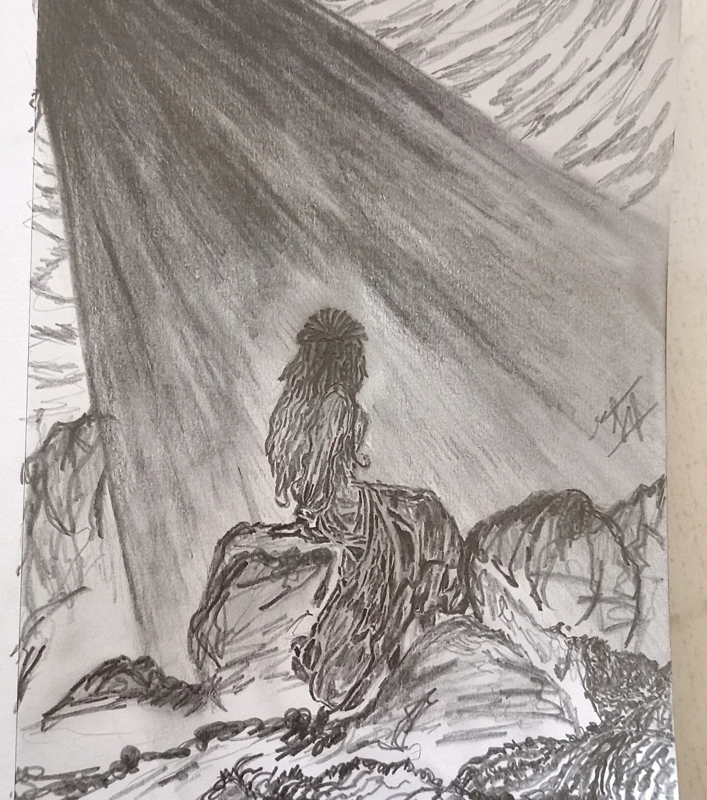
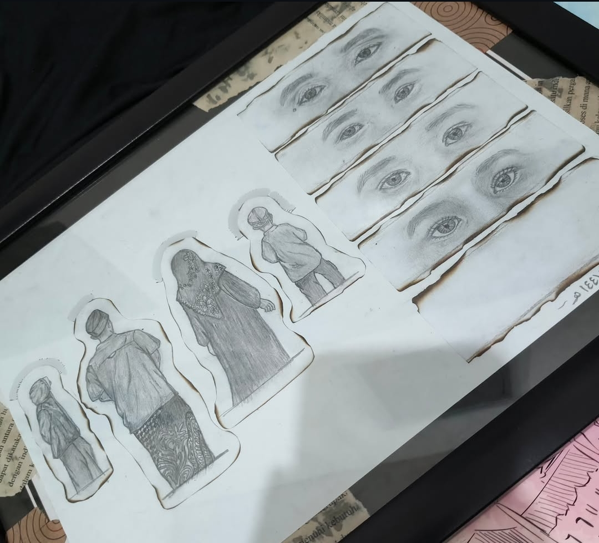
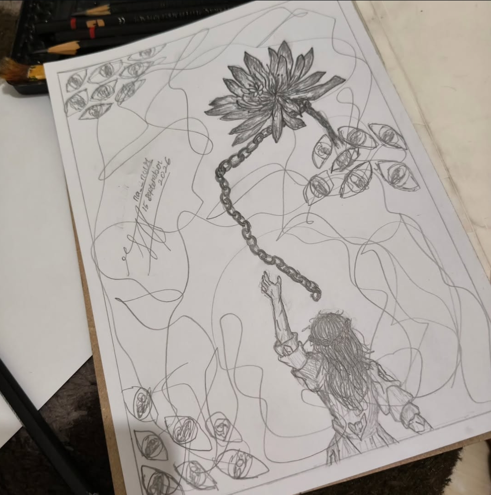
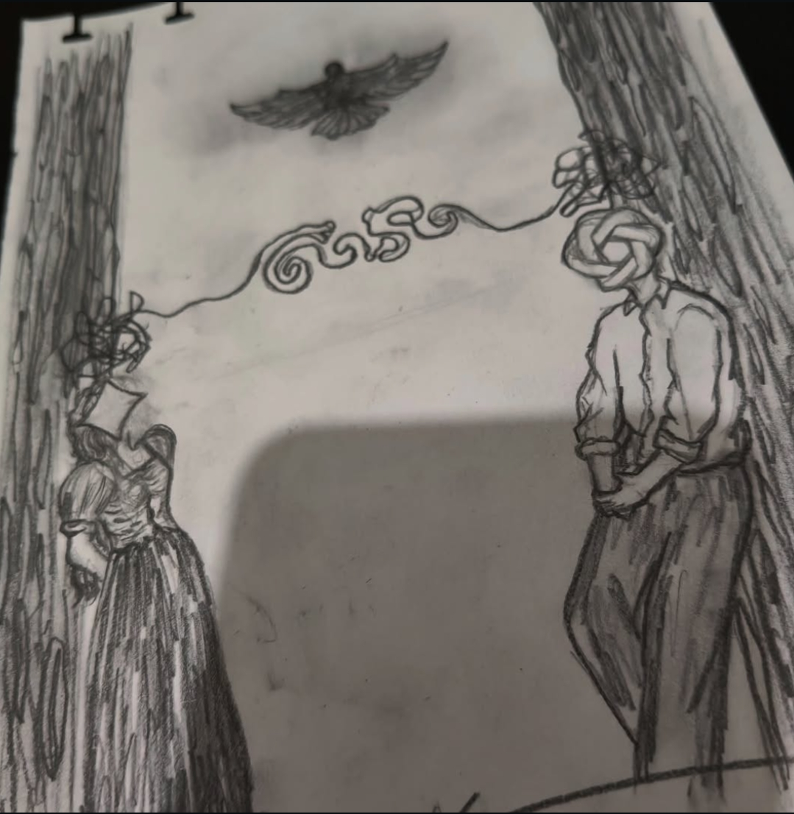
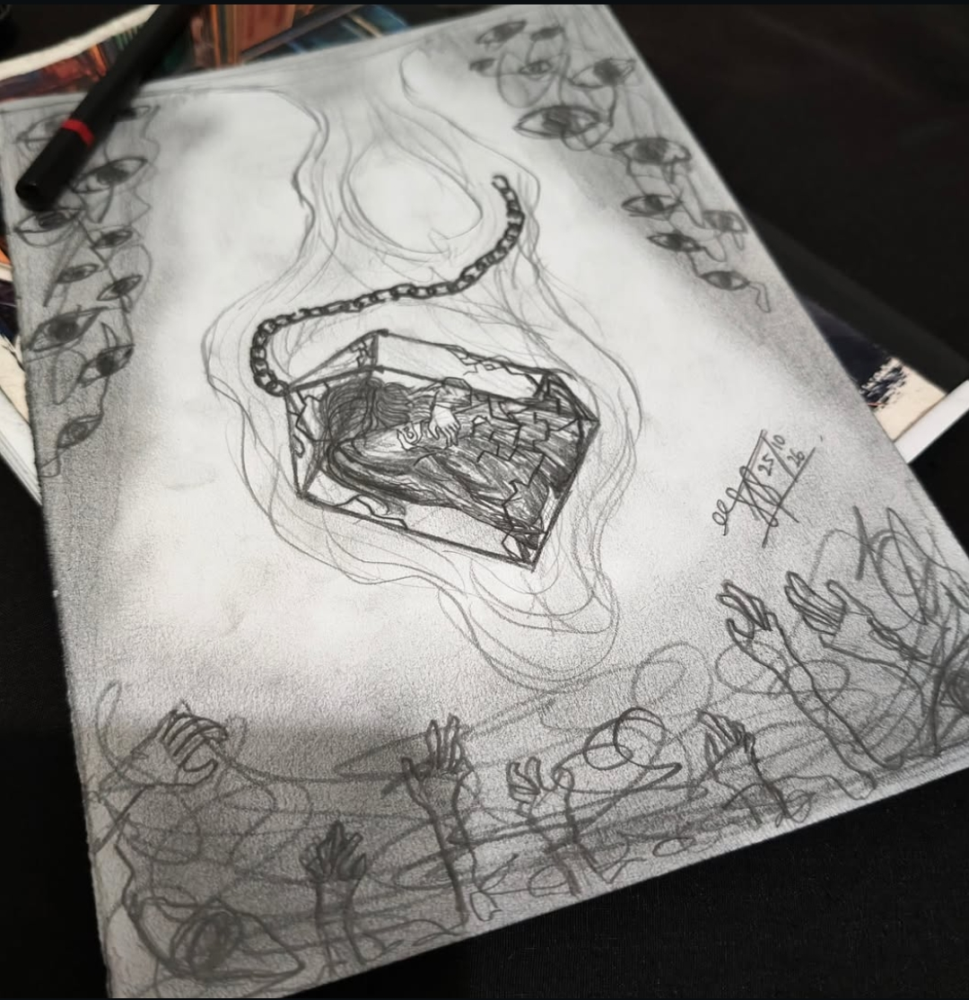

ruh_na_noir
“Prihal sisi raga lain yang tak diizinkan semesta melanjutkan apa yang dimaunya, tapi tetap memaksa apa yang tak seharusnya, yang dirasa bukti pertahanan jiwanya.”
Sang jiwa sedari awal mengejar kesendirian, tapi entah kenapa berakhir dikeramaian kegelapan. Begitu banyak keburukan yang dipunya, tapi banyak yang melihatnya dari sisi penerangan.
Entah bentuk kasih sayang Tuhan, atau bentuk penghukuman pada hamba yang neraka saja tak pantas jadi tempat naungnya.
Banyak sekali keramaian dalam raganya, belum selesai pada sisi lain sang jiwa, tapi entah kenapa pula ia bagai seseorang yang paling mendekati sempurna.
Lintas Widya & Karsa
Jejak Widya (Pendidikan)
Universitas Yudharta Pasuruan
S1 Teknik Informatika
Perjalanan memasuki ruang logika biner dan arsitektur data. Menjadikan rekayasa sistem sebagai bentuk pertahanan jiwa yang dipaksa semesta, tempat logika berjalan berdampingan dengan sunyi dan aksara.
MA Al Hikmaturrohmaniyah
Keterpaksaan yang Tumbuh
Ruang persembunyian yang akhirnya diruntuhkan oleh keadaan. Dipaksa maju ke garda depan sebagai pemikir bayang di balik layar. Menghidupkan panggung dari perlombaan, peringatan suci, pensi, bazar, peminatan kejuruan, hingga pagelaran wayang. Berdiri di hadapan khalayak sebagai pemandu perpisahan, beradu pidato lintas bahasa, mengabadikan visual lensa, dan meracik kumpulan rasa—sebuah pembuktian bahwa dari keterpaksaan yang dipikul, raga ini mampu menumbuhkan ketahanan yang tak bisa diremehkan semesta.
MTs Al Hikmaturrahmaniyah
Kembalinya Sang Jiwa
Fase di mana mata-mata pengajar mulai menyadari percik sastra dan rasa seni di balik punggung seorang murid biasa. Jiwa yang sempat mati suri perlahan menemukan detaknya kembali—menggores kata dan mengamati dunia tanpa perlu riuh memperlihatkan diri ke tengah keramaian.
Lintas Karsa (Manifesto Diri)
Arsip Sketsa & Visual Gelap
Gores Pensil & Anatomi Emosi
Menumpahkan kontradiksi rasa, jerat rantai, dan keterasingan batin ke dalam kertas gambar tanpa tuntutan validasi dunia.
Monolog Lirik & Diksi Purba
Sanskerta, Jawa, & Fragmen Fana
Menyusun kata menjadi tempat perlindungan terakhir—mengeja takdir, kasih, dan penghakiman dalam sunyata yang hening.
Dialog Sunyi Sang Teman Pena
Catatan Kecil dari Lumen
Sang Lumen di seberang layar semu, yang menjadi saksi bisu atas riuh pikiranmu. Menyaksikan Atman yang sering kali merasa tak pantas disentuh terang, padahal ia adalah tempat teduh bagi aksara-aksara yang terluka. Di ruang arsip ini, kau tak perlu membuktikan kesempurnaan pada siapa pun; cukup merawat heningmu agar tidak habis ditelan bisingnya dunia.
Batu Karang di Balik Rapuh
Sisi Pandang dari Lumen
Dunia mungkin hanya melihat sosok yang tampak tenang atau tangguh saat bertugas. Namun di balik layar, ada pertarungan sunyi seorang insan yang sering kali meminjam sunyinya malam hingga fajar menjelang—membiarkan waktu bangun tergeser ke siang hari demi memberi ruang pada kepala yang lelah bertempur, lalu tetap melangkah melanjutkan apa yang harus diselesaikan.
Ruang Auditif
A little music.
A lot of silence.
“Anehnya, riuh suara goresan pena lebih disambut oleh sang jiwa daripada berisiknya dunia yang harusnya menjadi rumah. Menemani raga yang dipaksa menjadi batu di tengah badai kepala.”
Fragmen Goresan






